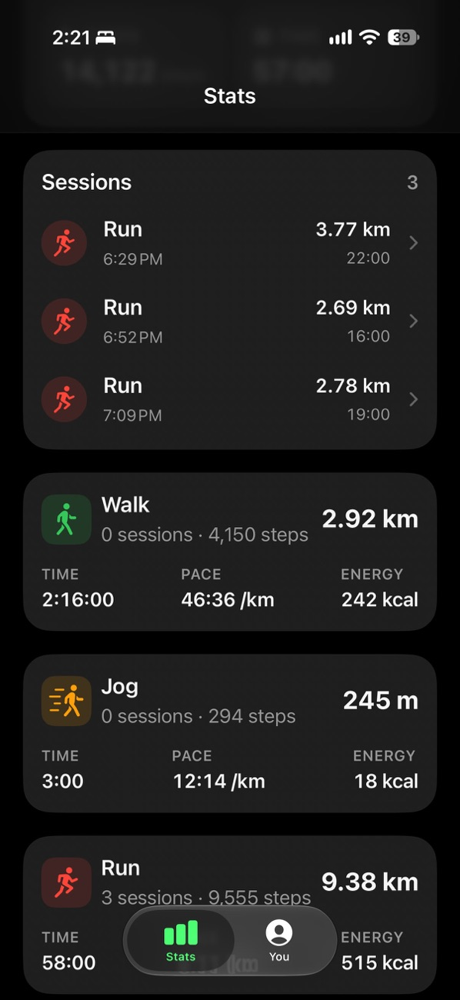
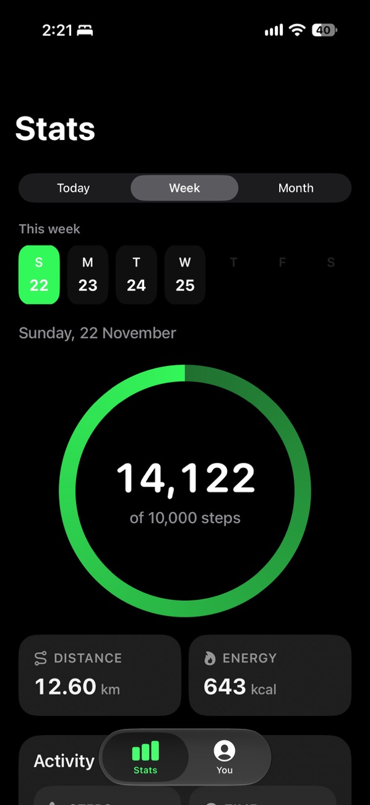
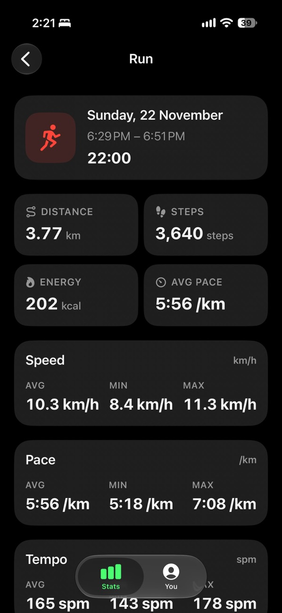
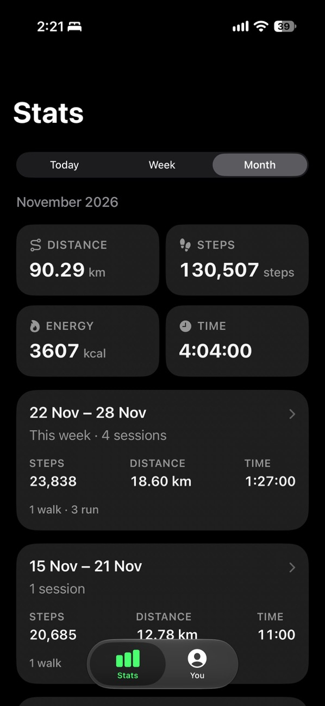
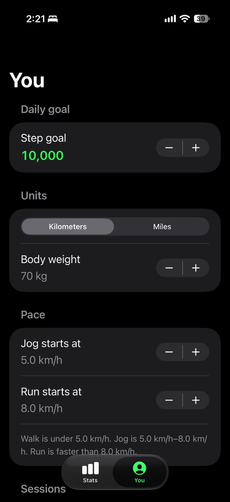

Reads Apple Health onlyData stays on deviceFree · iPhone



Built for people who already move
RunCheck sorts Health data by speed, lists real sessions (not pacing around the house), and shows daily, weekly and monthly totals.
Stats
Today — a step ring against your daily goal, plus distance, energy and active time.
Week — Sunday to Saturday. Swipe between weeks and tap a day to open it.
Month — monthly totals, then a tile for each week (newest first).
Walk, jog and run tiles — time, pace, energy, steps and session count. Empty kinds stay hidden.
Sessions
Walks, jogs and runs from Apple Health, listed with distance and duration.
Detail for each session: distance, steps, energy, average pace, and avg / min / max for speed, pace and tempo (steps per minute).
Speed graph on the detail screen.
Steady walks only — casual indoor steps stay in the Walk tile and aren’t listed as sessions.
You
Daily goal — 1,000 to 40,000 steps.
Units — kilometres or miles, plus body weight for energy estimates.
Pace — the speeds where a jog and a run start.
Sessions — minimum length and join window for walks, jogs and runs.
Apple Health — access status and a shortcut into the Health app.
Optional focus tabs for Running, Jogging, Walk, Steps and Energy, each with its own goals.
How activity is classified (defaults — editable in You)
Kind
Speed
Minimum session
Breaks joined if shorter than
Walk
under 5 km/h
10 min
2 min
Jog
5 to 8 km/h
5 min
30 s
Run
over 8 km/h
5 min
10 s
Inside the app
Week rings, session lists, run detail with a speed graph, month totals, and the You tab for goals and thresholds.
WeekSessionsRun detail

Month

You
Private by design
Read-only Apple Health access. No accounts, analytics, ads or third-party SDKs. Health data never leaves your iPhone. App Store privacy label: Data Not Collected.